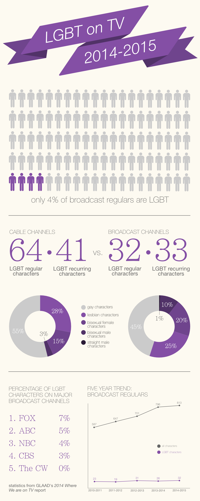

Master of Science in Information
Human Computer Interaction
University of Michigan - Ann Arbor
2016 - 2018
Master of Science in Information
Human Computer Interaction
University of Michigan - Ann Arbor
Bachelor of Arts in Informatics
Social Computing
University of Michigan - Ann Arbor
Development Associate
Ankura Consulting Group
Washington, DC
Website Content Manager
University of Michigan Housing Marketing Services
Ann Arbor, MI
June 2016 - July 2016
 Under Construction
Under Construction
September 2015
Using information from GLAAD's Where We are on TV report for 2014-2015, I created this infographic illustrating the state of LGBT representation on TV.
January 2012 - April 2012
Real Time Farms is devoted to the collaborative efforts between restaurants, farmers markets, farmers, and consumers to post information about food and ingredients online. The Real Time Farms website consists of 3 major pages: food, farmers markets, and eateries. Each of these options can be accessed via a menu bar at the top of the site or the map interface on the home page. Within these pages, visitors to the site can find food, farms, markets, and restaurants located anywhere in the world, though a majority of establishments are located in the United States. The website also includes features that enable site visitors to search for individual farms, markets and restaurants, and which ingredients these establishments use and where they have come from.
As the final project for SI 422: Evaluation of Systems and Services, I, along with a team of four others, created a report on the Real Time Farms website that looked at the usability of the site. Our report included our own thoughts, as well as findings obtained through interviews and testing with others who were unfamiliar with the site.
Real Time Farms Usability Report